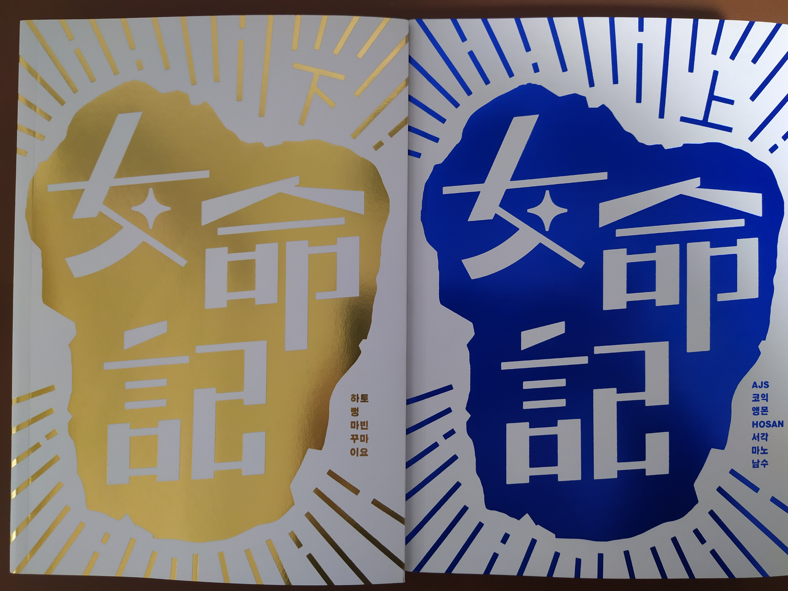

1.개요
여성 주연, 비 로맨스 테마 출판만화 앤솔로지이다. 12명의 여성 만화가로 결성된 프로젝트팀 <총명기>가 제작하였다. 여명기 상편에 7편, 하편에 5편 총 12편의 작품들이 실려 있고, 비망록 겸 대담집인 총명기(프로젝트 이름과 동일하다) 책자가 동봉되어 있다. 총명기에는 작품에 대한 작가들의 설명 및 안녕 자두야의 작가 이빈과의 대담록이 실려있다. 2020년 1월 20일 6시 30분 텀블벅에 후원을 오픈한지 24시간도 채 지나지 않아 목표금의 1,000%를 달성하였고, 동년 2월 20일 목표금액의 4756%1 를 경신하며 마감되었다.
2.구성
2.1.상편
- 플랑크톤의 귀향 - AJS
- 그날그날 먹고 사는 게 빠듯한 20대 후반 주인공이 나중에 바다가 보이는 자기만에 집에 살기를 꿈꾸는 이야기.
- 아구 속에는 무엇이 있나 - 코익
- 어떤 날 - 앵몬
- 가족과 함께 살던 30대 직장인 여성이 직장을 관두고 가족을 떠나 자아실현의 첫걸음을 떼는 이야기.
- 시스터후드 - HOSAN
- '탈코르셋 운동'을 실천하는 주인공의 그 언니의 이야기.
- 이스파라의 마녀 - 서각
- Teller - 마노
- 정체를 감춘 인공지능 작가의 대외적인 얼굴마담 역할을 하게 된 인간 여성 작가를 둘러싸고 벌어지는 이야기.
- 몽해 - 남수
- 주인공이 난생처음 접하는 바닷세계를 자신이 살아온 혹은 갇혀 있던 세계와 비교하게 되는 이야기.
2.2.하편
- 세상은 거대한 거짓말 - 하토
- 이상한 존재들이 혼재하여 살고 있는 근미래, 주인공이 개와 함께하는 새로운 삶을 사랑하게 되며 벌어지는 이야기.
- 최저임금을 위하여 - 뻥
- 근미래 한국을 배경으로 중년의 청소 노동자가 한국의 재정, 외교, 국방 기타 등등을 담당하는 슈퍼컴퓨터를 만나면서 벌어지는 이야기.
- 노아의 방주 - 마빈
- 신종 바이러스가 한 차례 인류를 휩쓴 뒤 셸터에서 만난 두 사람은 지구를 떠날지 남을지 고민한다.
- 태양이 뜨지 않는 도시 - 꾸마
- 여행과 관계의 첫 발짝을 떼는 두 사람의 이야기.
- 소쩍새의 울음소리 - 이요
- 어린 마녀가 스스로 세계를 서툴지만 천천히 견고하게 구축해나가는 이야기.
- 축전 그림 및 후원자명
- 축전 그림 참여작가 : 김공룡, 뼈와피와살, 솔, 수정, 아루, 야묘, 정서, 탑승, 햇조, CTK, FIGURE, RIVE, 82PIGEON, 방새미
3.특징
<여명기>는
1. 여성이 주인공일 것.
2. 로맨스가 아닐 것.
위 두 가지 조건을 전제로 하는 12편의 단편 만화 모음집입니다.
플랫폼에서 연재되는 만화는 상업적인 제한으로 작가가 오롯이 하고 싶은 이야기를 담기 어려울 때가 있습니다. 여성의 이야기, 특히 로맨스가 포함되지 않은 여성의 이야기는 시작도 하기 전에 곧잘 좌초되곤 합니다.
<여명기>는 12명의 청년 여성 작가가 어떤 제한도 없이 하고 싶은 이야기를 만들어보자는 취지로 모여 제작한 만화 앤솔로지입니다.
더 많은, 더 다양한 여성들이 주연이 되었으면 합니다.
<여명기>를 구성하는 12편의 이야기는 각기 다른 세계관, 각기 다른 주제를 다루고 있습니다. 하지만 이 각양각색의 이야기를 관통하는 하나의 공통점이 있습니다. 바로 현재를 살아가는 여성, 나아가서는 앞으로 살아갈 여성의 이야기를 담고 있다는 것입니다.2
4.트라비아
- 2019년 여성가족부에서 진행하는 '청년 참여 플랫폼' 문화혁신 공모사업의 지원을 받았으며, 기성작가와의 다리가 이루어진 계기가 되었다.
- 텀블벅 후원 300%를 초과해, 구매자 한정으로 후원자들이 남긴 질문에 참여진이 직접 답하는 QnA 팟캐스트를 들을 수 있는 리워드가 있다. 4월 25일까지 메일로 질문을 보내면 된다. 여명기 트위터 계정을 참조.
- 본품인 여명기에 한해 2020년 5월 이후 온라인 유료 게재 예정이며, 총명기는 판매되지 않는다.
- 2020년 4월 10일~4월 24일까지 인스타나 트위터에 #여명기_후기이벤트 해시태그와 함께 후기를 올릴 경우, 10명을 추첨해 엽서세트와 스티커세트를 보내준다.
- 여명기에 있는 QR코드를 핸드폰으로 찍으면 해당 작가의 대표작으로 연결된다.
5.관련링크
여명기 텀블벅 링크 (마감되었다)
여명기 트위터 계정
여명기 인스타그램
여명기 인터뷰 기사 (서울신문)3
여명기 서평 (웹툰 인사이트)